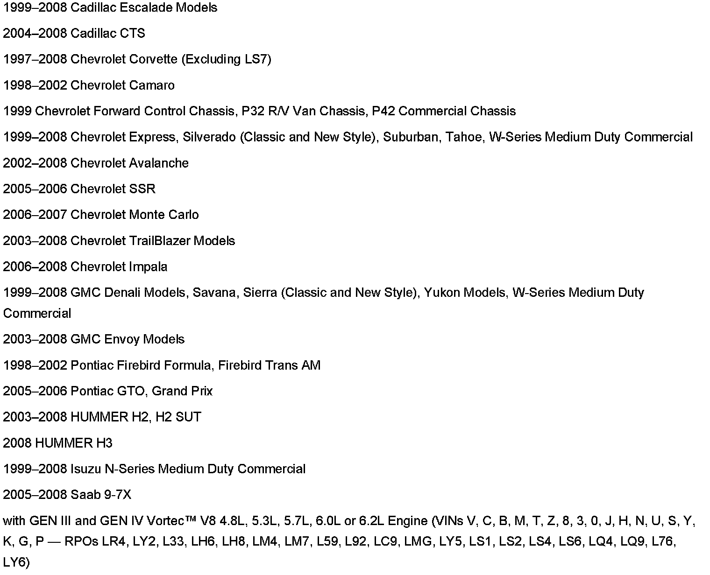

Engine - Revised Connecting Rod Bolt Torque
Bulletin No.: 07-06-01-002Date: March 05, 2007
INFORMATION
Subject:
Information on Revised Connecting Rod Bolt Torque for Small Block GEN III and GEN IV Vortec(TM) V8 Engines

Models
A new connecting rod bolt torque specification was introduced to the GEN III and GEN IV Vortec(TM) small block V8 engines. The connecting rod bolts should continue to be tightened using two passes. The second pass value has been increased from 75 degrees to 85 degrees.
Install the connecting rod bolts and tighten. Refer to Piston, Connecting Rod, and Bearing Installation in SI.
Tighten
Tighten the connecting rod bolts a first pass to 20 N.m (15 lb ft).
Tighten the connecting rod bolts a final pass to 85 degrees using the J 45059 Angle Meter.

Disclaimer